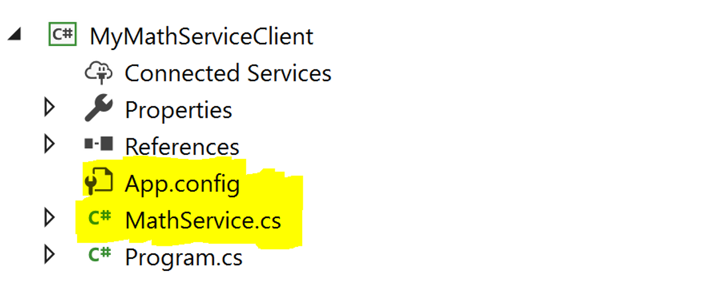
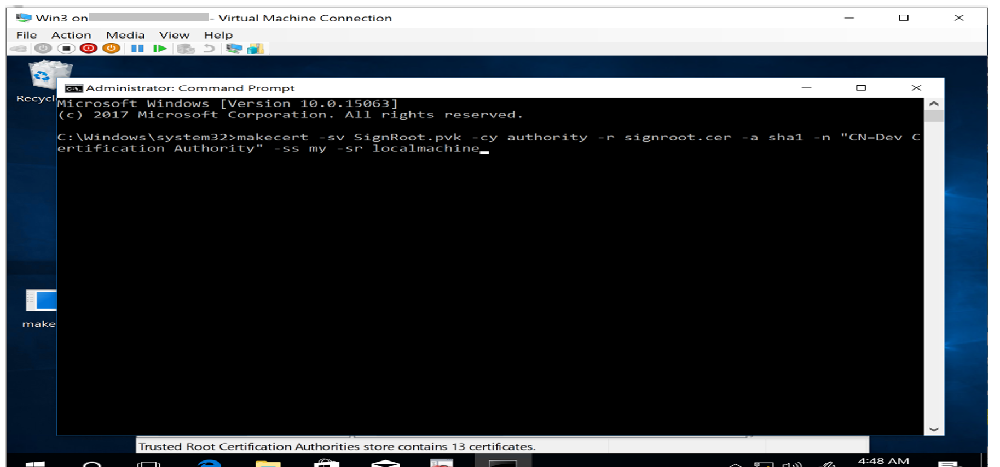
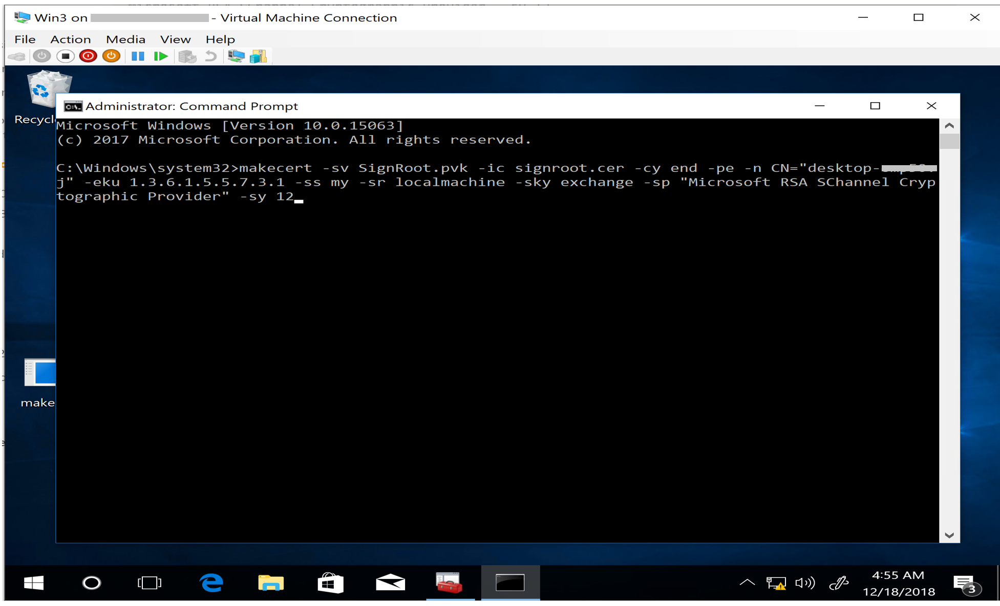
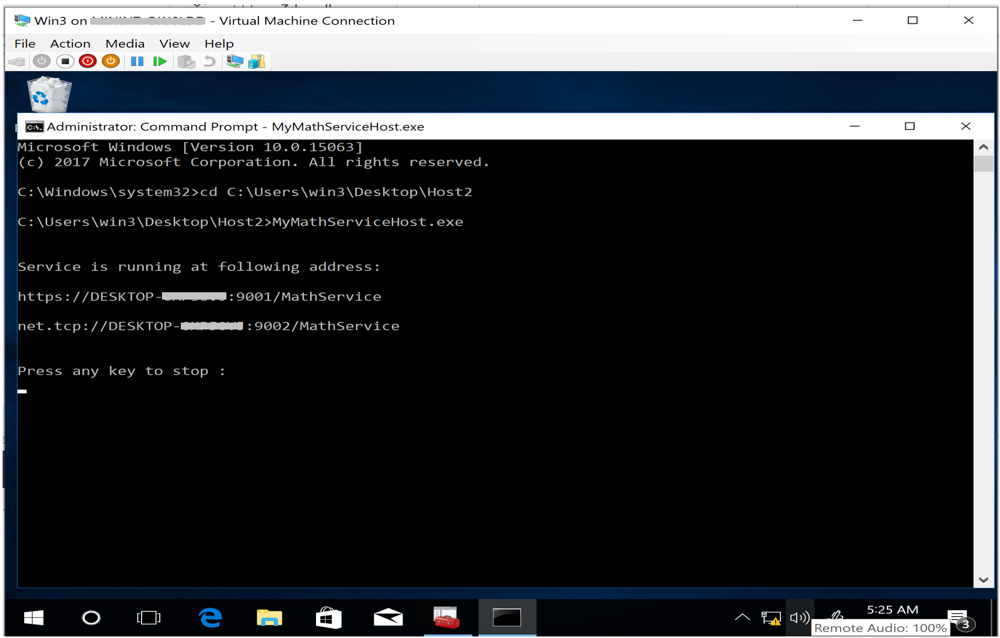
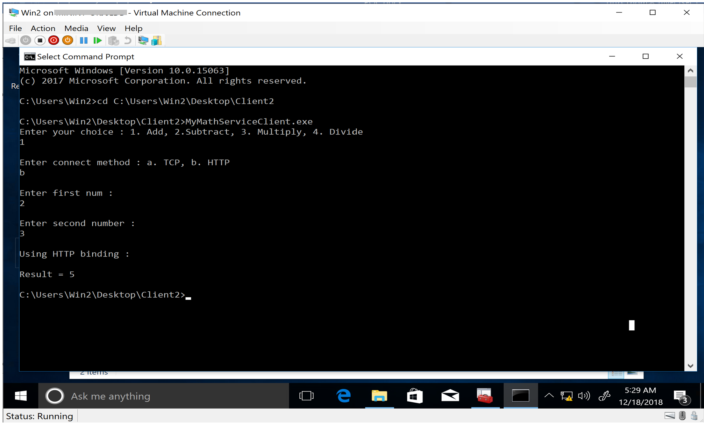

- Add both files to the client application. 
-
Go to the run window and type "mmc", hit enter. Then in the window that opens (called the "Microsoft Management Console, for those who care) perform the following actions. File -> Add/Remove Snap-in -> Add… -> Double click Certificates -> Select Computer Account and Click Next -> Finish -> Close -> OK
- Create the Root CA cert in host machine using “makecert”. 
- Move the Root CA cert to Trusted Root Node from Personal Node by drag and drop.
-
Use “makecert” again to create Server certificate.

*-n should be the host machine’s name.
- Export the CA certificate to .cer format. Exchange the .cer file to the client machine and install the exported certificate.
- Add it to Trusted Root node.
-
Bind the SSL cert to the application port in the Host machine.
(Start administrator powershell to perform this operation) Certhash=thumbprint of ssl certificate, appid=Host application’s assembly info Id
- Start the host service in the host machine 
- Start the client app in the client machine and start using the service using https. 